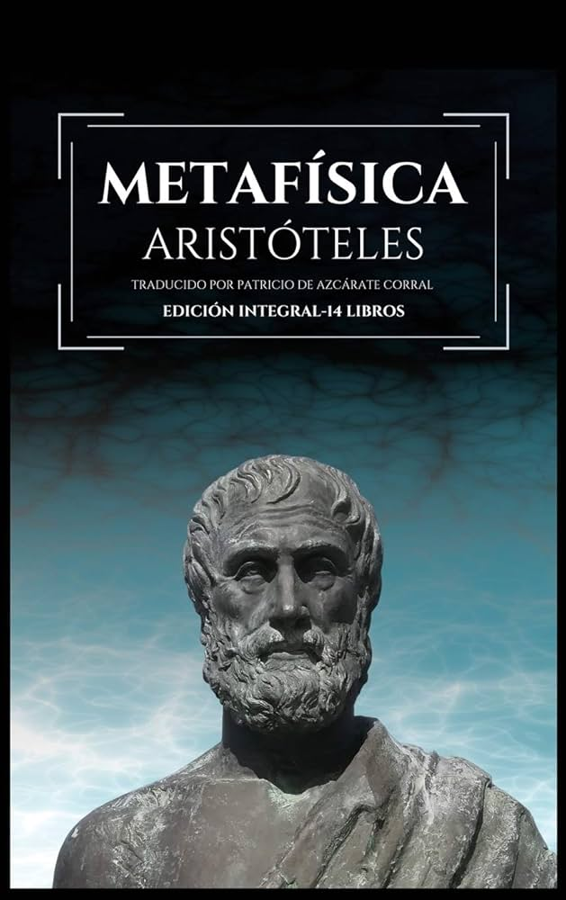

Sobre a brevidade da vida
Para Sêneca, a vida é um caminho para a felicidade através da razão e da virtude, não se deixando levar por expectativas ou pela busca de bens externos

O Príncipe
"O Príncipe" é um manual político de Nicolau Maquiavel sobre como conquistar e manter o poder, onde ele argumenta que a moralidade do governante deve ser separada da moralidade cristã tradicional.

Metafísica
A metafísica de Aristóteles, também chamada de "filosofia primeira", estuda o ser enquanto ser e suas causas primeiras. Ele se opõe a Platão ao focar em um único mundo, onde o conhecimento é encontrado nas essências das coisas, e não em um mundo de ideias separado.